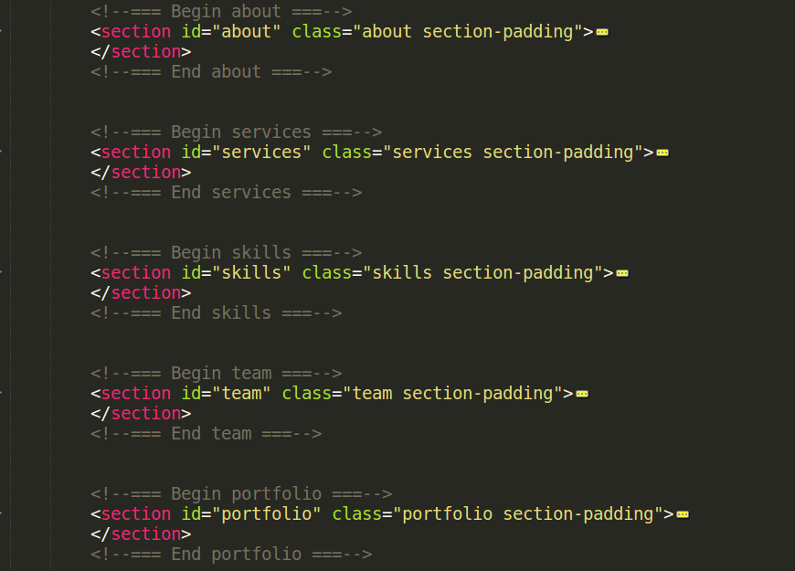

This document covers the installation, set up, and use of this template, and provides answers and solutions to common problems. We encourage you to first read this document thoroughly if you are experiencing any difficulties before contacting our support team.
Open you Cpanel and go to you main folder and upload all files.
You can also use FTP Server to upload all your files on server..
This theme is a responsive layout with 4+ columns.The header (column #1) content is within a section with an class of "header". The hero (column #2) content is within a section with an id of "about". The services (column #3) content is within a section with an id of "services". The clients (column #4) content is within a section with an id of "clients". The portfolio (column #5) content is within a div with an id of "portfolio". The blog (column #6) content is within a div with an id of "blog". The contact (column #7) content is within a section with an id of "contact". The general template structure is the same throughout the template. Here is the general structure.
I'm using two CSS files in this theme. The first one is a generic reset file. Many browser interpret the default behavior of html elements differently. By using a general reset CSS file, we can work round this. This file also contains some general styling, such as anchor tag colors, font-sizes, etc. Keep in mind, that these values might be overridden somewhere else in the file.
The second file contains all of the specific stylings for the page. The file is separated into sections using:
/* Basic */
some code
/* Utility Classes */
some code
/* header */
some code
/* about */
some code
/* services */
some code
etc, etc.
If you would like to edit a specific section of the site, simply find the appropriate label in the CSS file, and then scroll down until you find the appropriate style that needs to be edited.
#selector {
change styles here:
}
This theme imports three Javascript files.
[some Javascript goes here...along with an general explanation]
Sodic is developed in SASS. by using variable it's super easy to add changes. for compiling SASS we use Gurnt OR Prepros
We have add all major styles in style.css, and it's properly commented and very easy to customize. you can pick you block at top and easily search it in style.css file.
Sodic HTML template has awesome features. in this template you have unlimited Font options. it's super easy and fast to change Font of complete site. we have created a variable in scss file just replace it with your Font family that's all, in result you will have you required Font family on site.
Sodic HTML template has awesome features. in this template we have created a separate css file which has all Responsive style. it's super easy and fast to change any responsive in responsive.css file..
If you have a problem with the theme or found a bug, please let us know via our official Help Center. We take pride in our customer support and we will do what we can to assist you.
Please note that support is only offered for Sodic theme. If you already have a Pro license and have any questions that are beyond the scope of this document, feel free to ask us via our dedicated help center.
These are the primary CSS files used for general front-end styling. Use these to customize your template even further. All included CSS codes under sodic/css/
These are the various attribution inks to the Javascript files included or modified to work with in this template. All included JavaScript codes under sodic/js/
If you've requested and entered your theme license key, then you'll automatically be notified of any theme updates as we push them. This is the most effective method for getting updates pushed to you quickly and effienctly.
Overall, the safest and cleanest way to update your theme is to leave your currently modified theme on your server/site as is, rename the folder of the newly updated theme, upload the new theme, and modify that to match your original custom work. In this way, if something has gone wrong with the new version, you’re just a few clicks away from getting things back to how they originally were.
UI-ThemeZ